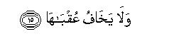

بسم الله الرحمن الرحيم
Sayyid Abul Ala Maududi - Tafhim al-Qur'an - The Meaning of the Qur'an
 91.
Sura As Shams (The Sun)
91.
Sura As Shams (The Sun)
The Surah has been so designated after the word ash-shams with which it opens.
The subject matter and the style show that this Surah too was revealed in the earliest period at Makkah at a stage when opposition to the Holy Prophet (upon whom be Allah's peace) had grown very strong and intense.
Its theme is to distinguish the good from the evil and to warn the people, who were refusing to understand this distinction and insisting on following the evil way, of the evil end.
In view of the subject matter this Surah consists of two parts. The first part consists of vv. 1-10, and the second of vv. 11-15. The first part deals with three things:
That just as the sun and the moon, the day and the night, the earth and the sky, are different from each other and contradictory in their effects and results, so are the good and the evil different front each other and contradictory in their effects and results; they are neither alike in their outward appearance nor can they be alike in their results.
That Allah after giving the human self powers of the body, sense and mind has not left it uninformed in the world, but has instilled into his unconscious by means of a natural inspiration the distinction between good and evil, right and wrong, and the sense of the good to be good and of the evil to be evil.
That the future of man depends on how by using the powers of discrimination, will and judgment that Allah has endowed him with, he develops the good and suppresses the evil tendencies of the self. If he develops the good inclination and frees his self of the evil inclinations, he will attain to eternal success, and if, on the contrary, he suppresses the good and promotes the evil, he will meet with disappointment and failure.
In the second part citing the historical precedent of the people of Thamud the significance of Prophethood has been brought out. A Messenger is raised in the world, because the inspirational knowledge of good and evil that Allah has placed in human nature, is by itself not enough for the guidance of man, but on account of his failure to understand it fully man has been proposing wrong criteria and theories of good and evil and thus going astray. That is why Allah sent down clear and definite Revelation to the Prophets (peace be upon them) to augment man's natural inspiration so that they may expound to the people as to what is good and what is evil. Likewise, the Prophet Salih (peace be upon him) was sent to the people of Thamud, but the people overwhelmed by the evil of their self, had become so rebellious that they rejected him. And when he presented before them the miracle of the she camel, as demanded by themselves, the most wretched one of them, in spite of his warning, hamstrung it, in accordance with the will and desire of the people. Consequently, the entire tribe was overtaken by a disaster.
While narrating this story of the Thamud nowhere in the Surah has it been said "O people of Quraish, if you rejected your Prophet, Muhammad (upon whom be Allah's peace and blessings), as the Thamud had rejected theirs, you too would meet with the same fate as they met." The conditions at that time in Makkah were similar to those that had been created by the wicked among the people of Thamud against the Prophet Salih (peace be upon him). Therefore, the narration of this story in those conditions was by itself enough to suggest to the people of Makkah how precisely this historical precedent applied to them.

In the name of Allah, the Compassionate, the Merciful.
[1-10] By the sun and his brightness,1 and by the moon when she follows him, and by the day when it makes (the sun) conspicuous and by the night when it covers up (the sun),2 and by the heaven and Him Who established it,3 and by the earth and Him Who spread it, and by the human self and Him Who balanced it,4 then inspired it with its wickedness and its piety.5 Truly successful is he who purified his self and a failure he who suppressed it.6

[11-15] Thamud7 belied (the Truth) because of their transgression.8 When the most wretched of them rose up, in his rage, the Messenger of Allah warned them, saying, "(Do not molest) the she-camel of Allah, and (do not hinder her from) drinking water."9 But they belied what he said and killed the she-camel.10 Consequently, their Lord let loose on them a scourge in consequence of their sin and leveled them down all together, and he has no fear of any evil result (of his this action).11
1The word duha as used in the original applies both to the light of the sun and to its heat. Although in Arabic its well known meaning is the time between sunrise and meridian when the sun has risen high, at that height it does not only give light but heat too. Therefore, when the word duha is attributed to the sun, its full meaning can be expressed more appropriately by its radiant brightness than by its light, or by the time of the day that it indicates.
2That is, when the night comes, the sun hides and its light remains hidden throughout the night. This state has been described, saying that the night covers up the sun, for the night actually signifies the sun's hiding behind the horizon because of which its light cannot reach that part of the earth where the night has fallen.
3"Who established it": Who established it like a vault over the earth. In this verse and in the two succeeding verses, the word ma has been used. A section of the commentators has taken this ma as an infinitive, and interpreted these verses to mean "By the heaven and its being established, by the earth and its being spread out, and by the human self and its being balanced. " But this meaning is not correct for the reason that the following sentence: "then inspired it with its wickedness and its piety", does not fit in with the context. Other commentators have taken ma here in the meaning of mun or alladhi and they interpret the sentence to mean: "Who established the heaven, who spread out the earth, and who balanced the human self. " This second meaning is correct in our view, and no one can object that ma in Arabic is used of lifeless things and irrational creatures, For in the Qur'an itself there are numerous instances that ma has been used in the meaning of mun, e.g. we la antum `abiduna ma a `bud ("nor are you the worshipers of Him Whom I worship"), fankihu ma taba lakun~-mia-an-nisa ` ("so, marry from among the women those whom you like") .wa la tanlkihu ma nakaha abaa ukum min-nisa' ("do not marry those women whom your fathers had married").
4"Balanced it" : gave man such a body which by virtue of its erect stature, its hands and feet, and its brain was most appropriate for him to live as man in the world. He blessed him with the senses of sight, hearing, touch, taste and smell which on account of their combination and their characteristics could become the best means of obtaining knowledge for him. He endowed him with the faculties of thinking and reasoning, imagination, memory, discrimination, judgment, will-power and such other mental powers by virtue of which he is able to perform the functions fit for man in the world. In addition, balancing also means that man was not created a sinner by birth and a criminal by instinct but on right and sound nature, anti was not characterized with any inborn crookedness because of which he may be unable to adopt the right path even if he wanted to do so. This same thing has been expressed in Surah Ar-Rum, saying: "Be steadfast on the nature whereupon Allah has created mankind." (v. 30), and the same has been explained by the Holy Prophet (upon whom be peace ) in a Hadith, saying: "Every new-born child is born on true human nature; it is his parents who make him a"Jew or a Christian or a Magian afterwards. Its example is of an animal giving birth to complete and sound young one. Do you find any one with a torn or slit ear ?" (Bukhari, Muslim). That is, it is the polytheistic people who on account of their superstitions of ignorance tear and slit the ears of animals after wards; otherwise God does not cause an animal to be born with torn ears from its mother's belly. In another Hadith the Holy Prophet said: "My Lord says: I had created all My servants on true Faith (i.e. on sound nature); then the satans came and led them astray from their Faith (i.e.. the true natural Faith) and made unlawful what I had made lawful for them, and commanded them to associate with Me those for whom I had sent down no authority." (Musnad Ahmad; Muslim also has related a saying from the Holy Prophet in similar words).
5The word ilham is derived from Jahm which means to swallow. According to this very basic meaning, the word ilham is used terminologically for Allah's inspiring a man with a concept or idea unconsciously. Inspiring the human self with its wickedness and its piety and virtue has two meanings: (1) That the Creator has placed in it tendencies to both good and evil, and this is the thing that every man feels in himself. (2) That Allah has endowed every man's unconscious mind with the concept that there is a moral good and there is a moral evil, that good morals and acts and evil morals and acts are not equal and alike; fujur (immorality) is an evil thing and taqva (abstention from evils) a good thing. These concepts are pot new to man; he is conscious of these by nature, and the Creator has endowed him with the ability to distinguish between good and evil naturally. This same thing has been said in Surah AI-Balad: "And We showed him both the highways of good and evil." v. 10); and in Surah Ad Dahr, thus: "We showed him the way, whether to be grateful or disbelieving" (v. 3); and the same has been expressed in Surah AI-Qiyamah, saying: "In man there is the reproaching self (conscience) which reproaches him when he commits evil (v. 2)," and "Man knows his own self best, even though he may offer many excuses." (w. 1415).
Here, one should also understand well that Allah has blessed every creature with natural inspiration according to its position and nature, as has been pointed out in Surah Ta Ha: "Who has given a distinctive form to everything and then guided it aright." (v. 50). For example, every species of animals has been given inspirational knowledge according to its needs by virtue of which the fish learns to swim, the bird to fly, the bee to make the beehive and the weaver-bird to build the nest instinctively. Man also in view of his different capacities has been granted separate kinds of inspirational knowledge. His one capacity is that he is an animal being; as such the most significant instance of the inspirational knowledge that he has been given is that the human child starts sucking the mother's milk soon on birth. which no one could teach it, had it, not been taught it instinctively by God. Another position of man is that 6e is a rational being. As such God has boon blessing him with . inspirational guidance continuously since the time of his creation, by virtue of which he has been discovering things and making inventions to develop his civilization. Anyone who studies the history of these discoveries and inventions will realize that there was hardly any which might be the result of man's own effort or thought, but mostly it so happened that suddenly an idea struck a person and he discovered or invented something. Besides these two, another position of man is that he is a moral being. In this position too Allah has blessed him by inspiration with discrimination between good and evil and of the realization of the good to be good and of the evil to be evil. This sense of discrimination and realization is a universal truth on account of which no human society in the world has even been without the concepts of good and evil; there has never been in history, nor is there now, a society which may not be having some kind of a system of rewarding the good and punishing the evil. this fact being prevalent in every age, at every place, and at every stage of civilization is a clear proof of its being natural and innate. Furthermore, this is also proof that a Wise Creator possessed of knowledge has endued man's nature with it, for in the elements of which man is made up and the laws which govern the material system of the world, no human origin of morals can be traced out.
6This is for which an oath has been sworn by the things mentioned in the above verses. Let us now consider how those things bear upon it. The rule that Allah has followed in the Qur'an is that to bear testimony to the truths that He wants to impress on the human mind, he cites some of the most conspicuous, common-place things which every man sees in his surroundings, or in his own self. Accordingly here, pairs of contradictory things have been cited, each unlike the other in its effects and results, rather opposite and reverse. The first pair is of the sun and the moon. The light of the sun is intensely bright and also hot. As against it the moon has no light of its own. Even if it is there in the sky when the sun shines, it is without light. It shines when the sun hides, and even then its light is neither so bright that it may change the night into day nor is there any heat in it that it may have the same effect as the sun's light. Nevertheless, it has its own effects which are quite different from the effects of the sun. Likewise, there is the pair of the day and the night. Each is the reverse of the other. The effects and results of each are so different from the other that no one can say they are alike; so much so that even a most foolish person cannot possibly say that the day's being the day or the ,night's being the night does not make any difference. Likewise, there is the pair of the sky and the earth; the former has been raised high by the Creator and the latter spread like a carpet beneath it. Although both are serving the same universe, its system and expediencies, yet there is a world of difference between their functions and their effects and results. After citing these universal evidences, man's own self has been considered, and it has been said that after balancing it with suitable combination of the limbs, senses and mental powers and faculties the Creator has placed in it tendencies, inclinations and motives to both good and evil, which are contradictory to each other, and made him understand by inspiration the distinction between the two: that one is fujur, which is evil, and the other is tagva, which is good. Now, if the sun and the moon, the day and the night, the earth and the heaven, are not alike but necessarily different from each other in their effects and results, how can fujur and taqva of the self be alike in spite of being reverse of each other? Man himself in this world does not regard and acknowledge the good and the evil as equal, no matter what criteria of good and evil he might have devised for himself according to his self-propounded philosophies. In any case, about whatever he regards as good, he holds the opinion that it is appreciable and worthy of praise, reward and recompense. On the contrary, about whatever he regards as evil, it is his own objective opinion that it is worthy of condemnation and punishment. But the real judgment does not lie with man; it lies with the Creator, Who has inspired man with his fujur and taqva. The fujur is that which is fujur in the sight of the Creator and the tagva that which is tagva in His sight, and both have separate results in the sight of the Creator. The result of the one is that he who purifies his self, should attain to eternal success, and the result of the, other is that he who suppresses his self, should be a failure.
Tazkiyah means to purify, develop and cultivate. In the context it clearly moans the one who purifies his self of fujur and develops it to the level of tagva and cultivates in it the ,good, will attain to eternal success. As against this; the word dassaha has been used, the infinitive of which is tadsiyah, which means to suppress, conceal, seduce and lead astray. The meaning of this also becomes clear from the context; i. e. the one who suppresses the tendency in his self towards good instead of developing and cultivating it, who seduces it into doing evil, and makes fujur dominate over taqva so as to cover it up completely like the dead body which is buried and covered with earth, will be a failure. Some commentators have interpreted this verse to mean: "Truly successful was he whom (whose self) Allah purified .and a failure he whom (whose self) Allah suppressed." But this commentary is, firstly, opposed to the style of the Qur'an in view of the language, for if Allah had meant to say this, He would have said: "Truly successful was the self which Allah purified and a failure the self which Allah suppressed;" secondly, this commentary clashes with the other statements of the Qur'an on this subject. In Surah Al-A`la, Allah says: "Truly successful was he who adopted purity." (v. 14). In Surah `Abasa, Allah has addressed His Holy Messenger, saying: "And. you would not be responsible if he did not adopt purity " In both these verses, adoption of purity has been regarded as an act of man. Besides, the truth stated at many places in the Qur'an is that man in this world is being put to the test. For example, in Surah Ad-Dahr, it is said: "We created man from a mixed sperm-drop, to try him, and so We made him capable of hearing and seeing." (v. 2) In Surah AlMulk it is stated: "Who created death and life that he may try you to see which of you is best in deeds. (v. 2) Now, obviously, if the examiner at the outset encourages one candidate and discourages the other, the test would he a farce. Therefore, the correct commentary is that which Qatadah, `Ikrimah, Mujahid and Sa`id bin Jubair have given, saying that the subject zakkaha and dassaha is man and not God. As for the Hadith which Ibn Abi Hatim has related on the authority of Juwaybir bin Sa`id from Dahhak from Ibn `Abbas, saying that the Holy Prophet (upon whom be peace) himself interpreted this verse to mean: "Truly successful was the self whom the Almighty Allah purified"; this saying is not confirmed to be from the Holy Prophet, for its one reporter Juwaybir, has been rejected as a narrator of Hadith, and Dahhak did not meet Ibn `Abbas. However, the Hadith which Imam Ahmad, Muslim, Nasa'i and Ibn Abi Shaibah have related on the authority of Hadrat Zaid bin Arqam, is correct which says that the Holy Prophet used to pray: "O Allah, grant my self its taqva and purify it: You alone are the best to purify it; You alone are its Guardian and Master. " In almost similar words, this supplication of the Holy Prophet has been related by Tabarani Ibn Marduyah and lbn al-Mundhir from Hadrat `Abdullah bin `Abbas and Imam Ahmad from Hadrat `A'ishah. It actually means that man can only desire and seek tagva and tazkiyah; as for its attainment, it depends in any case on Allah's grace and,favour alone. And the same also is we of tadsiyah: Allah does not suppress a self forcibly, but when a man is resolved on iniquity, Allah deprives him of the grace of tagva and tazbyab, 'and leaves him alone to suppress and bury his self under nay heap of filth he likes.
7The things stated in principle in the above verses, are now being explained by as historical precedent or what it is a precedent and how it relates to what has been stated above, one should consider well in .the. light of the other statements of the Qur'an the two basic truths which have been expressed in vv. 7-10.
Firstly, in these it has been stated that attar creating the human self on balanced and sound nature, Allah inspired it with its fujur and its taqwa. The Qur'an along with stating this truth also makes explicit that this inspirational knowledge of fujur and tagva is not enough for every man that he may by himself obtain detailed guidance from it, but for this purpose Allah gave detailed guidance to the Prophets through Revelation in which it was explained what is fujur and what it applies to, which one should avoid, and what is taqwa which one should attain and develop, if man does not accept and acknowledge this clear and definite guidance sent down through Revelation, he can neither avoid fujur not find the way to taqwa.
Secondly, in these verses it has been stated that, the rewards and punishments are the necessary results which accrue from adoption of either fujur or taqva The result of cleansing the self of fujur and developing it ,with taqwa is eternal success and the result of suppressing its good tendencies and causing it to be overwhelmed with fujur is.failure, ruin and destruction.
To make man understand this truth a historical precedent is being cited and for this the tribe of Thamud has been taken as an illustration, for the various tribes destroyed in antiquity the territory of the Thamud was closest to Makkah. In northern Hijaz its historical ruins were extant. which the people of Makkah passed by during their trade journeys to Syria, and the way this tribe has been frequently referred to in the pre-Islamic poetry shows that its destruction was a common subject of talk among the Arabs.
8"Belied the truth": belied the Prophethood of the Prophet Salih, who was sent for their guidance. On account of their rebellious attitude they were not prepared to give up the fujur in which they were involved, and they were not inclined to accept the taqwa to which the Prophet Salih was calling them. For details, see Al-A'raf: 73-76, Hud: 61-62, Ash-Shu`ara': 141-153, An-Naml: 45-49, Al-Qamar: 23-25.
9At other places in the Qur'an the following details, are given: The people of Thamud challenged the Prophet Salih to present a sign (a miracle) if he was truthful. Thereupon the Prophet presented a she-camel miraculously before them and warned them to the effect: "This is Allah's she-camel. She will graze at will in the land. One day will be for her to drink and one day for you and your cattle. If you molest her, you will be punished with a scourge." This proved to be a deterrent for some time. Then they appealed to their most wicked and rebellious, chief to put an end to the she-camel, and he took up the responsibility and hamstrung her. (AI-A`raf 73, Ash-Shu`ara: 134156, Al-Qamar: 29).
10According to Surah Al-A`raf: 77, after they had killed the she-camel, the people of Thamud said to the Prophet Salih: "Bring the scourge with which you threatened us." And according to Hud: 65, the Prophet Salih said to them: "Well, you have only three more days to enjoy yourselves in your houses This is a limit that will not prove false. "
11That is, Allah is not like the kings of the world and the rulers of governments, who, when they want to take some action against a people, are compelled to consider what will be the consequences of their action. Allah's power is supreme. He had no apprehension that some supporting power of the Thamud would come out to avenge itself on Him.